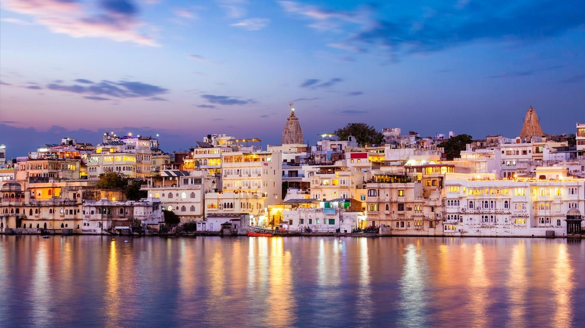
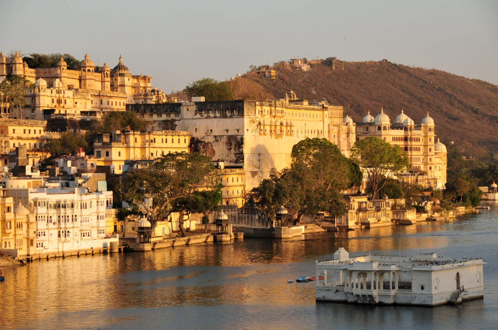
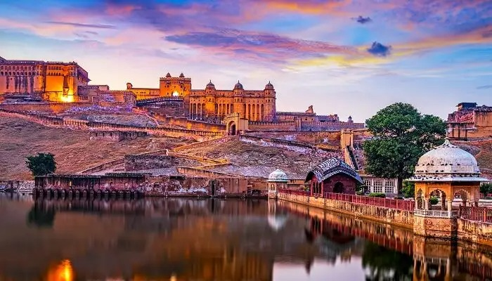
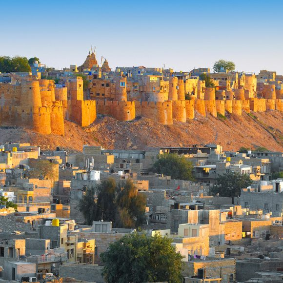
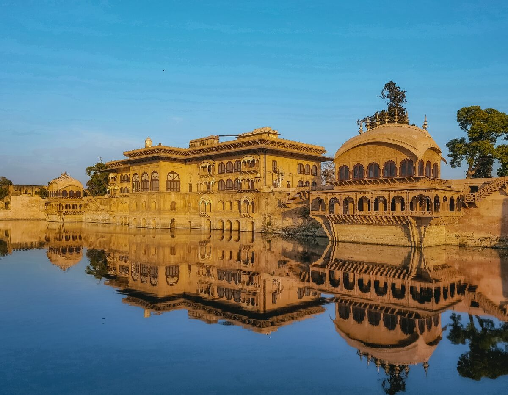
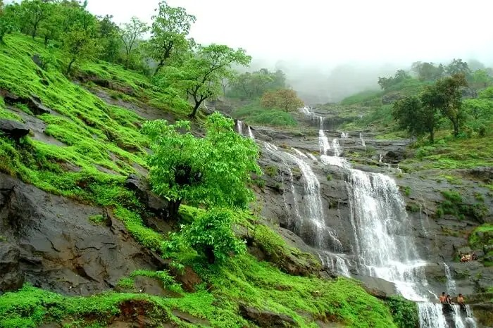
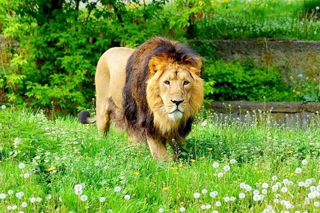
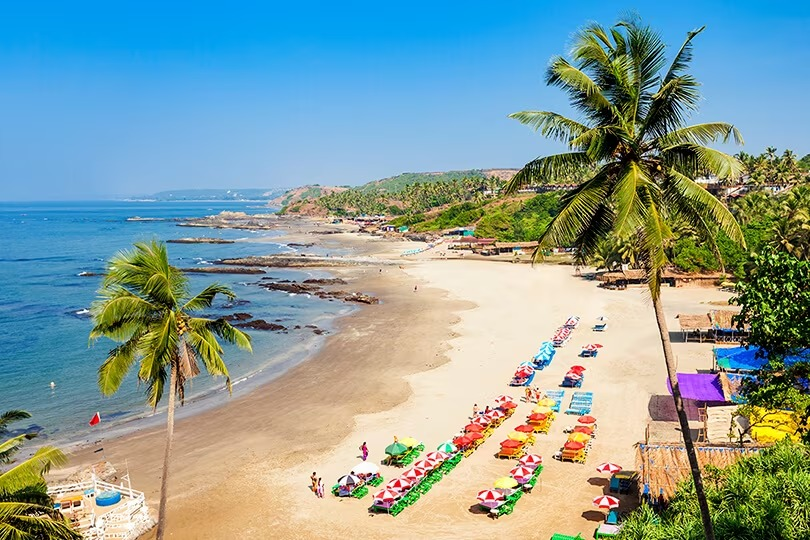

-
1...UDAIPUR, Rajasthan-The City Of Lakes
 Udaipur, also known as the City of Lakes, is the crown jewel of the state of Rajasthan. It is surrounded by the beautiful Aravalli Hills in all directions, making this city as lovely as it is. This 'Venice of the East' has an abundance of natural beauty, mesmerising temples and breathtaking architecture which makes it a must-visit destination in India. A boat ride through the serene waters of Lake Pichola will be enough to prove to you why Udaipur is the pride of Rajasthan.
Best Time To Visit : October to March -
2...JAIPUR, Rajasthan-The Pink City
Jaipur, the ?Pink City?, is one of the most royal, majestic and colourful cities of India with a very strong historical background and vibrant culture.
Jaipur was founded in 1727 by the Kachhwaha Rajput ruler Jai Singh II, the ruler of Amer, after whom the city is named. It was one of the earliest planned cities of modern India, designed by Vidyadhar Bhattacharya. During the British Colonial period, the city served as the capital of Jaipur State.
Best Time To Visit : October to March -
3...JAISALMER, Rajasthan-THE Golden City
Situated close to the Pakistan Border, Jaisalmer is a major tourist spot located in the northwestern state of Rajasthan in India. It is called the 'golden city' due to its bounteous golden dunes flowing in the Thar Desert. Jaisalmer is adorned with lakes, ornate Jain temples, havelis and castles clad in golden yellowish sandstone. Climb on to the camel saddle and make your way through this desert or camp under the night sky in this golden land for an unforgettable experience.
Best Time: October to March -
4...BHARATPUR,Rajasthan-The Bird Heaven
Often referred as the 'Eastern Gate of Rajasthan', Bharatpur is located in the Braj region of state Rajasthan. The city is drenched by its culture, chivalry and romance woven into ballads and folklore can be heard from miles. An exotic offbeat destination that serves tourists with authentic Rajasthani traditions, religious occasions mark devotion of the state people. Also known as Lohagarh, it is a part of the golden tourism triangle of Delhi, Jaipur and Agra, this place attracts a considerable number of national and international tourist every year. It is also the home of Keoladeo National Park, which habitats over 370 species of animals and birds. It is recognised as one of the most popular birds feeding and breeding grounds. In 1982 the park was marked as a National Park, and later in 1985, it came on the list of World Heritage Sites by UNESCO.
Best Time To Visit: November to February -
5...JODHPUR,Rajasthan-The Blue City

Also Known as the "Gateway to Thar", it is famous for its Mehrangarh fort, blue houses, temples, sweets and snacks. Apart from the fort, there are multiple temples, lakes, shopping streets that are like a mirage from a bygone era.
Best Time To Visit: November to February -
6...MUMBAI,Maharastra-The City Of Dreames

Mumbai is a spectacular paradox of chaos and hope, glamor and squalor, modernity and tradition, old and new. Famously known as the City of Dreams, Mumbai – formerly known as Bombay – has a long colonial history, starting from Gandhi’s visits to the city to the intense protests against the Simon Commission in 1928, the city has stood witness to many important events in the country’s freedom struggle. Today, Mumbai is a beautifully blended melting pot of cultures and lifestyles. The city soaks in everything into its fabric, making it its very own. From European and Portuguese inhabitants who migrated years ago to the city, to upcoming actors struggling to make it big on the silver screen; from Bolly superstars to big industrialists to tribes of fisherman and slum dwellers, Mumbai is a city that proudly boasts of stories from different walks of human survival.
Best Time To Visit: October to February -
7...MATHERAN,Maharastra-Cutest Title Hill Station Of India
Nestled amidst the Sahyadri range on the Western Ghats, Matheran is a cosy little hill station that stands at an elevation of 2600 feet above sea level, and is just 100 kilometres away from Mumbai, making it the perfect weekend getaway. With its name literally translating to “overhead forest”, Matheran is the smallest hill station in all of India, but it is extremely popular in terms of tourists looking for a short trip amid spectacular vistas and serenity.
Best Time To Visit: Throughout the year -
8...GIR,Gujrat-The Land Of Asiatic Lions
Gir National Park is the only remaining home for the Asiatic Lions that are almost a definition to this park in Gujarat, which has a lot more to offer. Best Time To Visit: July to March
-
9...KUTCH,Gujrat-The White Desetr Of India

Virtually an island that resembles the shape of a tortoise, Kutch is an erstwhile princely state of India holding onto its grandeur nature from the past.
Best Time To Visit: July to March -
10...GOA-Beaches,Sunset And crazy Nights
When you think of Goa, you think of sandy beaches, amazing parties, beautiful little villages, delicious food, and a magical holiday experience. Yes, Goa is rightfully known as the most popular tourist destination on the West Coast of India, and not just because of its scenic beaches, but also because of its tropical climate and its rich Portuguese heritage, which you can still find lingering on in some parts of the town. Nestled in the Konkan Coast Belt, Goa has a coastline stretching for over a 100 kilometres, and attracts millions of visitors both from within and outside the country all year round.
Best Time To Visit: October to March